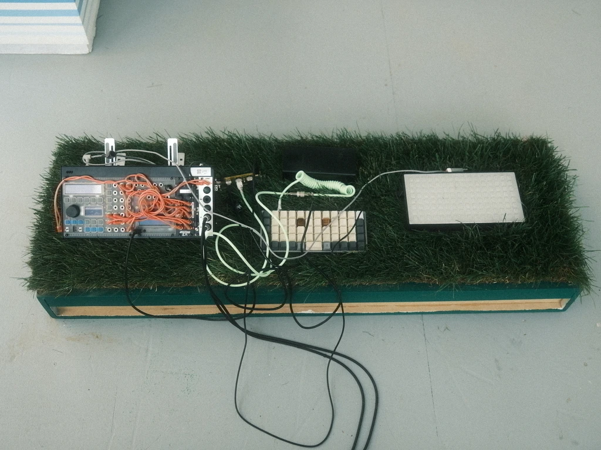
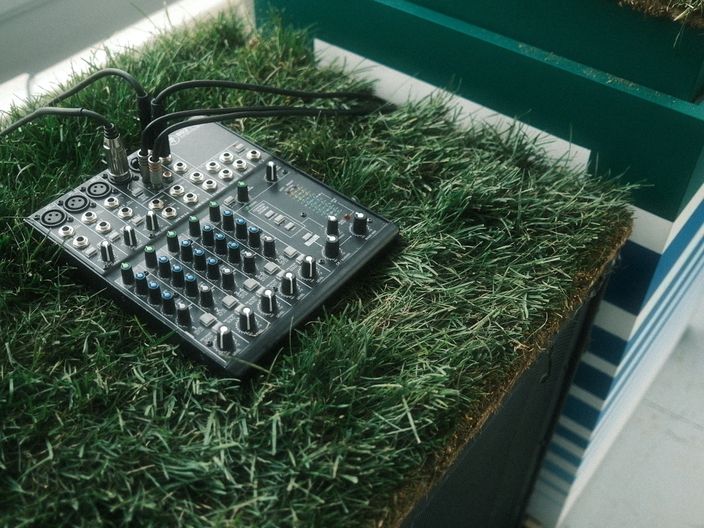
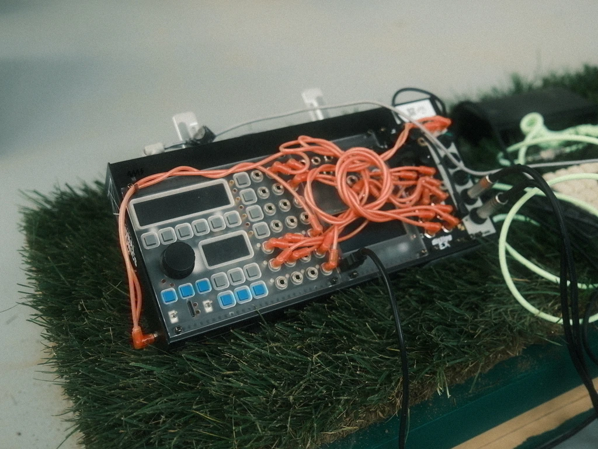
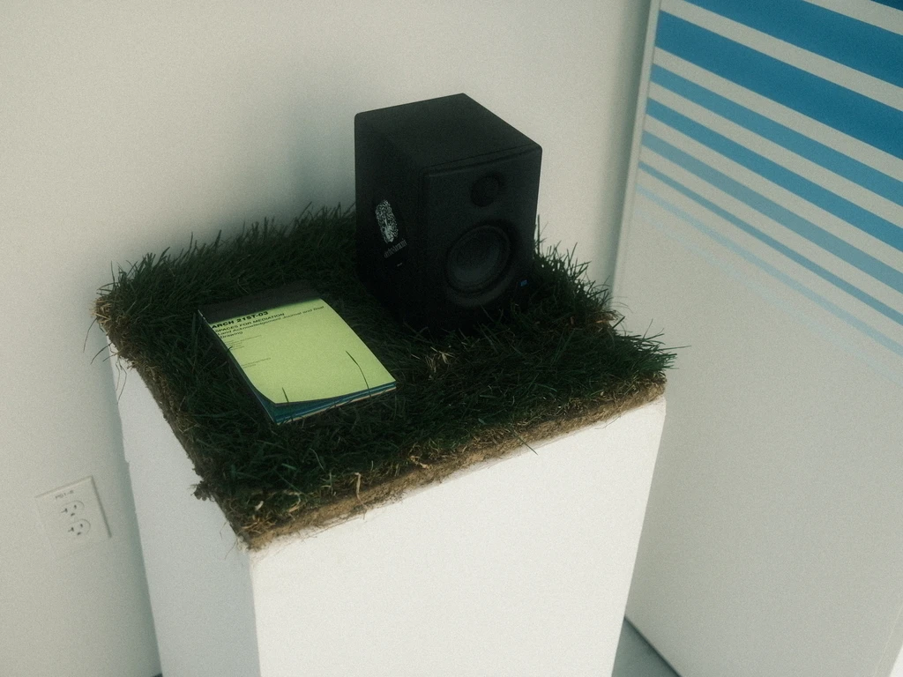
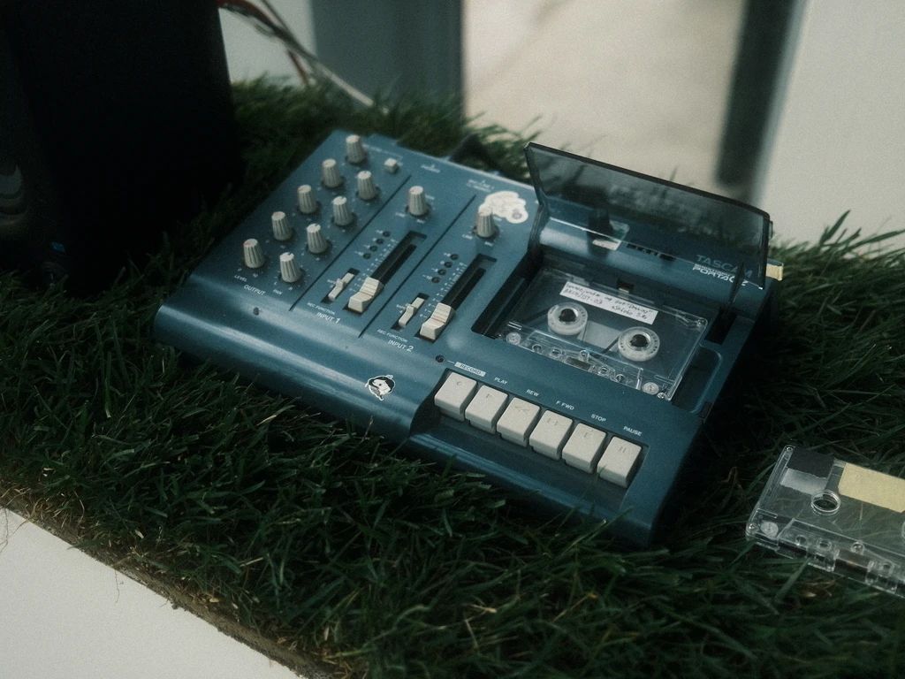
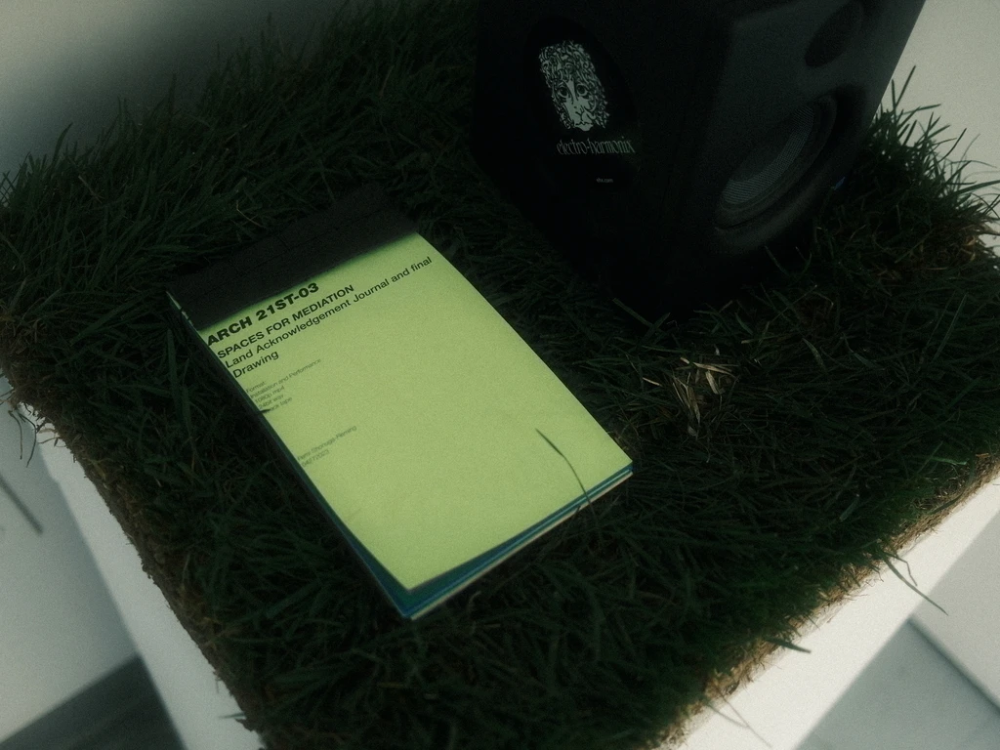
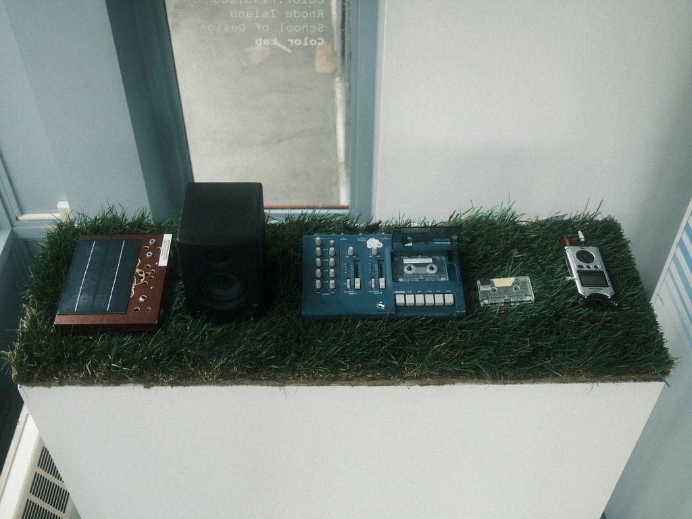
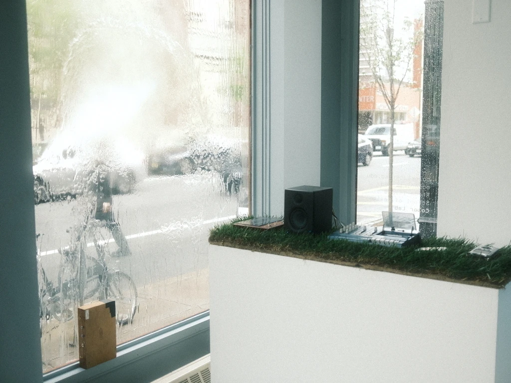

Spaces for Mediation | Architecture Advanced Studio Fall 2023
Land Acknowledgement Journal and Final Drawing

Watch the performance
from The First Water Is the Body by Natalie Diaz
"I must preserve the river in my body"
Jacques Derrida says, Every text remains in mourning until it is translated. When Mojaves say the word for tears, we return to our word for river, as if our river were flowing from our eyes. A great weeping is how you might translate it. Or a river of grief. But who is this translation for and will they come to my language’s four-night funeral to grieve what has been lost in my efforts at translation? When they have drunk dry my river will they join the mourning procession across our bleached desert? The word for drought is different across many languages and lands. The ache of thirst, though, translates to all bodies along the same paths—the tongue, the throat, the kidneys. No matter what language you speak, no matter the color of your skin. ↞ We carry the river, its body of water, in our body.
In the same way that water flows through our bodies, sound is something we all experience, a universal medium. The practice of listening itself is a translation beyond words, on an architectural scale. There is this focus to preserve language in culture. In my practice, the lost information in that translation presents itself as part of the conversation of sound. Sound has no history or future; it exists in the moment. In my search for sound and performance as a way to give homage to certain cultures, this misinformation and conversations around translation present themselves in the grains between words. The sound is the river that physically connects us all; it has no words at its base.
This was a mostly research-based course. Over the course of the semester, I researched Lenape people, specifically their use of the drum as an instrument for ceremonies and rituals. The Lenape people use the drum to celebrate the land as a spiritual practice. The drum represents the heartbeat of the earth. In itself, these drum circles, the communal gathering and social nature of them, is the ritual that brings them together. There is a clear connection between the ritual of the drum circle and dance music and club culture on the same land today: the collection of bodies in a space, listening to the same heartbeat rhythm. There is power in this translation over hundreds of years later. Through the collection of indigenous music and alongside my existing performance practice, I wanted to make a speculative futurist land acknowledgment with the elements of my research. At this time, I was writing my systems manual and thinking about systems of modular synthesis and different audio manipulation techniques. I wanted to bridge the traditional vocal and drum rhythms of the Lenape people with experimental electronic music to emphasize the nuances of these connections between the two. This took place in the form of a performance piece at the end of the course, including tape loops of field recordings of water taken from sites in Bushwick, where the Lenape tribe would have been. Water was a grounding symbol, an element that has stayed the same from then until now, yet is always fluid and organic. The tape loop also included a Lenape song. These loops were then sampled and processed by my modular synth with granular synthesis.
The audio mixer and all of the electronics were coupled to the ground or their surfaces by a sheet of grass. I treat this grass, a completely organic material, as the grounding element (poetically with ground in electronics terms). The layer in-between gives the electronics life in their utilitarian nature, as if they bloomed from the dirt. This performance was not only a presentation of my land acknowledgment and research but a ritual practice in itself and a representation of the history of music culture.
Granular synthesis:
Granular synthesis is a sound synthesis method that operates on the microsound time scale.
A piece of music composed with fast and slow granular synthesis.
It is based on the same principle as sampling. However, the samples are split into small pieces of around 1 to 100 ms in duration. These small pieces are called grains.
Multiple grains may be layered on top of each other, and may play at different speeds, phases, volume, and frequency, among other parameters.
At low speeds of playback, the result is a kind of soundscape, often described as a cloud, that is manipulatable in a manner unlike that for natural sound sampling or other synthesis techniques. At high speeds, the result is heard as a note or notes of a novel timbre. By varying the waveform, envelope, duration, spatial position, and density of the grains, many different sounds can be produced.
An example of granular synthesis. Note how the tiny snippets of sound (the grains) are initially distinct, but then blend together, generating a completely new timbre.
Both have been used for musical purposes: as sound effects, raw material for further processing by other synthesis or digital signal processing effects, or as complete musical works in their own right. Conventional effects that can be achieved include amplitude modulation and time stretching. More experimentally, stereo or multichannel scattering, random reordering, disintegration, and morphing are possible.
Why granular synthesis?
I’m drawn to this form of experimenting with audio in this project in particular because, as a concept, it is related to nature, generation and generativeness, an initial state of being, and evolution over time.
From Curtis Roads: Microsound p.3
Above the level of an individual piece are the cultural time spans defining the oeuvre of a composer or a stylistic period. Beneath the level of the note lies another multilayered stratum, the microsonic hierarchy. Like the quantum world of quarks, leptons, gluons, and bosons, the microsonic hierarchy was long invisible. Modern tools let us view and manipulate the microsonic layers from which all acoustic phenomena emerge. Beyond these physical time scales, mathematics defnes two ideal temporal boundariesÐthe in®nite and the in®nitesimalÐwhich appear in the theory of musical signal processing.
From Curtis Roads: Microsound p.328 ~ On the Aesthetics of Composing with Microsound
The aesthetic of organized sound places great emphasis on the initial stage of compositionÐthe construction and selection of sound materials. This may involve synthesis, which often begins with microsounds, furnishing the elementary components used in the assembly of higher-level sound objects. Just as the molecular properties of wood, thatch, mud, steel, and plastic determine the architectural structures one can construct with them, so sonic microstructure inevitably shapes the higher layers of musical structure. The middle layers of musical structureÐmesostructureÐarise through interaction with the material.
Granular synthesis reminds me of grains of sand. The wind blows grains of sand in the wind to create a new portrait in the ground. Recorded audio is a trim and cut/sample of that moment in time, representing sound visually, sand and dust in relation to minimalism and minimalistic moves within composition. Granular synthesis reminds me of evolution. You start with a set of genes, that is your audio, your initial state, first generation, and as you stretch that state, that initial audio over time, the longer the audio is stretched, the audio adapts to itself and has to inevitably evolve into a new form of being. Granular synthesis reminds me of raindrops in a storm.
Microsound in repetition as time stretches is essentially a ritual practice, as the longer the audio is stretched, the more the repetition of elements of the audio and the longer the ritual practice.
The formal qualities directly relate to musical and architectural composition and lenses for me to compose music for architecture, spaces for sound, and the ritual of composing and performing experimental music.







I made this film for INDIGENOUS GLOBAL CINEMA CLASSICS 101 | RISD Wintersession 2024
incoming gear